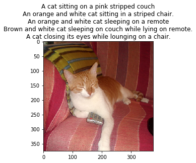
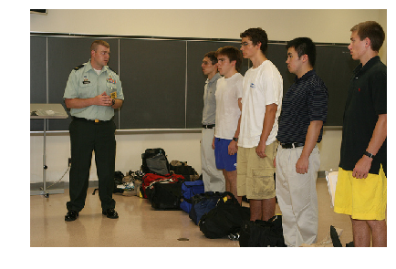
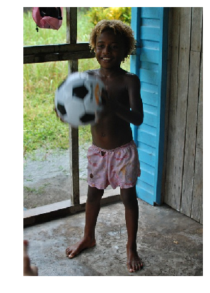
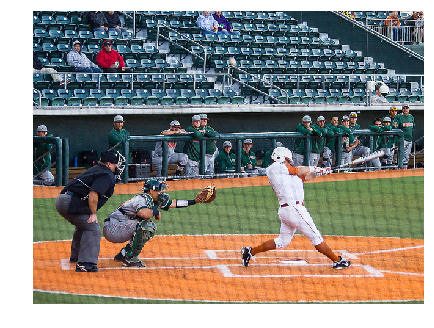
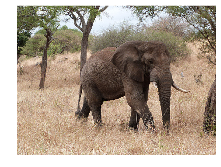

import tensorflow as tf from tensorflow.contrib import keras import numpy as np %matplotlib inline import matplotlib.pyplot as plt L = keras.layers K = keras.backend import utils import time import zipfile import json from collections import defaultdict import re import random from random import choice import grading_utils import os from keras_utils import reset_tf_session import tqdm_utils
# Leave USE_GOOGLE_DRIVE = False if you're running locally! # We recommend to set USE_GOOGLE_DRIVE = True in Google Colab! # If set to True, we will mount Google Drive, so that you can restore your checkpoint # and continue trainig even if your previous Colab session dies. # If set to True, follow on-screen instructions to access Google Drive (you must have a Google account). USE_GOOGLE_DRIVE = False
CHECKPOINT_ROOT = "" if USE_GOOGLE_DRIVE: CHECKPOINT_ROOT = mount_google_drive() + "/"
defget_checkpoint_path(epoch=None): if epoch isNone: return os.path.abspath(CHECKPOINT_ROOT + "weights") else: return os.path.abspath(CHECKPOINT_ROOT + "weights_{}".format(epoch)) # example of checkpoint dir print(get_checkpoint_path(10))
/root/intro-to-dl/week6/weights_10
Fill in your Coursera token and email
To successfully submit your answers to our grader, please fill in your Coursera submission token and email
# token expires every 30 min COURSERA_TOKEN = "" COURSERA_EMAIL = ""
Download data
Takes 10 hours and 20 GB. We've downloaded necessary files for you.
Relevant links (just in case): - train images http://msvocds.blob.core.windows.net/coco2014/train2014.zip - validation images http://msvocds.blob.core.windows.net/coco2014/val2014.zip - captions for both train and validation http://msvocds.blob.core.windows.net/annotations-1-0-3/captions_train-val2014.zip
1 2
# we downloaded them for you, just link them here download_utils.link_week_6_resources()
Extract image features
We will use pre-trained InceptionV3 model for CNN encoder (https://research.googleblog.com/2016/03/train-your-own-image-classifier-with.html) and extract its last hidden layer as an embedding:
1
IMG_SIZE = 299
1 2 3 4 5 6 7 8
# we take the last hidden layer of IncetionV3 as an image embedding defget_cnn_encoder(): K.set_learning_phase(False) model = keras.applications.InceptionV3(include_top=False) preprocess_for_model = keras.applications.inception_v3.preprocess_input
model = keras.models.Model(model.inputs, keras.layers.GlobalAveragePooling2D()(model.output)) return model, preprocess_for_model
Features extraction takes too much time on CPU: - Takes 16 minutes on GPU. - 25x slower (InceptionV3) on CPU and takes 7 hours. - 10x slower (MobileNet) on CPU and takes 3 hours.
# look at training example (each has 5 captions) defshow_trainig_example(train_img_fns, train_captions, example_idx=0): """ You can change example_idx and see different images """ zf = zipfile.ZipFile("train2014_sample.zip") captions_by_file = dict(zip(train_img_fns, train_captions)) all_files = set(train_img_fns) found_files = list(filter(lambda x: x.filename.rsplit("/")[-1] in all_files, zf.filelist)) example = found_files[example_idx] img = utils.decode_image_from_buf(zf.read(example)) plt.imshow(utils.image_center_crop(img)) plt.title("\n".join(captions_by_file[example.filename.rsplit("/")[-1]])) plt.show() show_trainig_example(train_img_fns, train_captions, example_idx=142)
png
Prepare captions for training
1 2
# preview captions data train_captions[:2]
[['A long dirt road going through a forest.',
'A SCENE OF WATER AND A PATH WAY',
'A sandy path surrounded by trees leads to a beach.',
'Ocean view through a dirt road surrounded by a forested area. ',
'dirt path leading beneath barren trees to open plains'],
['A group of zebra standing next to each other.',
'This is an image of of zebras drinking',
'ZEBRAS AND BIRDS SHARING THE SAME WATERING HOLE',
'Zebras that are bent over and drinking water together.',
'a number of zebras drinking water near one another']]
1 2
from functools import reduce from collections import Counter
# special tokens PAD = "#PAD#" UNK = "#UNK#" START = "#START#" END = "#END#"
# split sentence into tokens (split into lowercased words) defsplit_sentence(sentence): returnlist(filter(lambda x: len(x) > 0, re.split('\W+', sentence.lower())))
defgenerate_vocabulary(train_captions): """ Return {token: index} for all train tokens (words) that occur 5 times or more, `index` should be from 0 to N, where N is a number of unique tokens in the resulting dictionary. Use `split_sentence` function to split sentence into tokens. Also, add PAD (for batch padding), UNK (unknown, out of vocabulary), START (start of sentence) and END (end of sentence) tokens into the vocabulary. """ counter = Counter() for captions in train_captions: for sentence in captions: counter.update(split_sentence(sentence)) vocab = {item for item,count in counter.items() if count >= 5} vocab = vocab.union({PAD,UNK,START,END}) return {token: index for index, token inenumerate(sorted(vocab))} defcaption_tokens_to_indices(captions, vocab): """ `captions` argument is an array of arrays: [ [ "image1 caption1", "image1 caption2", ... ], [ "image2 caption1", "image2 caption2", ... ], ... ] Use `split_sentence` function to split sentence into tokens. Replace all tokens with vocabulary indices, use UNK for unknown words (out of vocabulary). Add START and END tokens to start and end of each sentence respectively. For the example above you should produce the following: [ [ [vocab[START], vocab["image1"], vocab["caption1"], vocab[END]], [vocab[START], vocab["image1"], vocab["caption2"], vocab[END]], ... ], ... ] """ res = [] for img_captions in captions: img_indx_cations = [] for sentence in img_captions: indx_sentence = [vocab[START]] + [vocab.get(token,vocab[UNK]) for token in split_sentence(sentence)] + [vocab[END]] img_indx_cations.append(indx_sentence) res.append(img_indx_cations) return res
1 2 3 4 5
# prepare vocabulary
vocab = generate_vocabulary(train_captions) vocab_inverse = {idx: w for w, idx in vocab.items()} print(len(vocab))
8769
1 2 3
# replace tokens with indices train_captions_indexed = caption_tokens_to_indices(train_captions, vocab) val_captions_indexed = caption_tokens_to_indices(val_captions, vocab)
Captions have different length, but we need to batch them, that's why we will add PAD tokens so that all sentences have an equal length.
We will crunch LSTM through all the tokens, but we will ignore padding tokens during loss calculation.
# we will use this during training defbatch_captions_to_matrix(batch_captions, pad_idx, max_len=None): """ `batch_captions` is an array of arrays: [ [vocab[START], ..., vocab[END]], [vocab[START], ..., vocab[END]], ... ] Put vocabulary indexed captions into np.array of shape (len(batch_captions), columns), where "columns" is max(map(len, batch_captions)) when max_len is None and "columns" = min(max_len, max(map(len, batch_captions))) otherwise. Add padding with pad_idx where necessary. Input example: [[1, 2, 3], [4, 5]] Output example: np.array([[1, 2, 3], [4, 5, pad_idx]]) if max_len=None Output example: np.array([[1, 2], [4, 5]]) if max_len=2 Output example: np.array([[1, 2, 3], [4, 5, pad_idx]]) if max_len=100 Try to use numpy, we need this function to be fast! """ cap_max = max(map(len,batch_captions)) ifnot max_len: max_len = cap_max elif max_len < cap_max: max_len = max_len else: max_len = cap_max matrix = np.empty([len(batch_captions),max_len]) matrix.fill(pad_idx) for index,line inenumerate(batch_captions): matrix[index,:len(line)] = line[0:max_len] matrix[index,len(line):] = pad_idx return matrix
# you can make submission with answers so far to check yourself at this stage grader.submit(COURSERA_EMAIL, COURSERA_TOKEN)
Submitted to Coursera platform. See results on assignment page!
1 2 3
# make sure you use correct argument in caption_tokens_to_indices assertlen(caption_tokens_to_indices(train_captions[:10], vocab)) == 10 assertlen(caption_tokens_to_indices(train_captions[:5], vocab)) == 5
Training
Define architecture
Since our problem is to generate image captions, RNN text generator should be conditioned on image. The idea is to use image features as an initial state for RNN instead of zeros.
Remember that you should transform image feature vector to RNN hidden state size by fully-connected layer and then pass it to RNN.
During training we will feed ground truth tokens into the lstm to get predictions of next tokens.
Notice that we don't need to feed last token (END) as input (http://cs.stanford.edu/people/karpathy/):
# remember to reset your graph if you want to start building it from scratch! s = reset_tf_session() tf.set_random_seed(42)
Here we define decoder graph.
We use Keras layers where possible because we can use them in functional style with weights reuse like this:
1 2 3 4 5
dense_layer = L.Dense(42, input_shape=(None, 100) activation='relu') a = tf.placeholder('float32', [None, 100]) b = tf.placeholder('float32', [None, 100]) dense_layer(a) # that's how we applied dense layer! dense_layer(b) # and again
Here's a figure to help you with flattening in decoder:
classdecoder: # [batch_size, IMG_EMBED_SIZE] of CNN image features img_embeds = tf.placeholder('float32', [None, IMG_EMBED_SIZE]) # [batch_size, time steps] of word ids sentences = tf.placeholder('int32', [None, None]) # we use bottleneck here to reduce the number of parameters # image embedding -> bottleneck img_embed_to_bottleneck = L.Dense(IMG_EMBED_BOTTLENECK, input_shape=(None, IMG_EMBED_SIZE), activation='elu') # image embedding bottleneck -> lstm initial state img_embed_bottleneck_to_h0 = L.Dense(LSTM_UNITS, input_shape=(None, IMG_EMBED_BOTTLENECK), activation='elu') # word -> embedding word_embed = L.Embedding(len(vocab), WORD_EMBED_SIZE) # lstm cell (from tensorflow) lstm = tf.nn.rnn_cell.LSTMCell(LSTM_UNITS) # we use bottleneck here to reduce model complexity # lstm output -> logits bottleneck token_logits_bottleneck = L.Dense(LOGIT_BOTTLENECK, input_shape=(None, LSTM_UNITS), activation="elu") # logits bottleneck -> logits for next token prediction token_logits = L.Dense(len(vocab), input_shape=(None, LOGIT_BOTTLENECK)) # initial lstm cell state of shape (None, LSTM_UNITS), # we need to condition it on `img_embeds` placeholder. c0 = h0 = img_embed_bottleneck_to_h0(img_embed_to_bottleneck(img_embeds))
# embed all tokens but the last for lstm input, # remember that L.Embedding is callable, # use `sentences` placeholder as input. word_embeds = word_embed(sentences[:,:-1]) # during training we use ground truth tokens `word_embeds` as context for next token prediction. # that means that we know all the inputs for our lstm and can get # all the hidden states with one tensorflow operation (tf.nn.dynamic_rnn). # `hidden_states` has a shape of [batch_size, time steps, LSTM_UNITS]. hidden_states, _ = tf.nn.dynamic_rnn(lstm, word_embeds, initial_state=tf.nn.rnn_cell.LSTMStateTuple(c0, h0))
# now we need to calculate token logits for all the hidden states # first, we reshape `hidden_states` to [-1, LSTM_UNITS] flat_hidden_states = tf.reshape(hidden_states, [-1, LSTM_UNITS])
# then, we calculate logits for next tokens using `token_logits_bottleneck` and `token_logits` layers flat_token_logits = token_logits(token_logits_bottleneck(flat_hidden_states)) # then, we flatten the ground truth token ids. # remember, that we predict next tokens for each time step, # use `sentences` placeholder. flat_ground_truth = tf.reshape(sentences[:, 1:], [-1])
# we need to know where we have real tokens (not padding) in `flat_ground_truth`, # we don't want to propagate the loss for padded output tokens, # fill `flat_loss_mask` with 1.0 for real tokens (not pad_idx) and 0.0 otherwise. flat_loss_mask = tf.not_equal(flat_ground_truth, pad_idx)
# compute cross-entropy between `flat_ground_truth` and `flat_token_logits` predicted by lstm xent = tf.nn.sparse_softmax_cross_entropy_with_logits( labels=flat_ground_truth, logits=flat_token_logits )
# compute average `xent` over tokens with nonzero `flat_loss_mask`. # we don't want to account misclassification of PAD tokens, because that doesn't make sense, # we have PAD tokens for batching purposes only! loss = tf.reduce_mean(tf.boolean_mask(xent, flat_loss_mask))
1 2 3 4 5 6 7 8 9 10
# define optimizer operation to minimize the loss optimizer = tf.train.AdamOptimizer(learning_rate=0.001) train_step = optimizer.minimize(decoder.loss)
# will be used to save/load network weights. # you need to reset your default graph and define it in the same way to be able to load the saved weights! saver = tf.train.Saver()
# intialize all variables s.run(tf.global_variables_initializer())
/usr/local/lib/python3.5/dist-packages/tensorflow/python/ops/gradients_impl.py:93: UserWarning: Converting sparse IndexedSlices to a dense Tensor of unknown shape. This may consume a large amount of memory.
"Converting sparse IndexedSlices to a dense Tensor of unknown shape. "
1 2 3 4 5
## GRADED PART, DO NOT CHANGE! # Decoder shapes test grader.set_answer("rbpnH", grading_utils.test_decoder_shapes(decoder, IMG_EMBED_SIZE, vocab, s)) # Decoder random loss test grader.set_answer("E2OIL", grading_utils.test_random_decoder_loss(decoder, IMG_EMBED_SIZE, vocab, s))
1 2
# you can make submission with answers so far to check yourself at this stage grader.submit(COURSERA_EMAIL, COURSERA_TOKEN)
Submitted to Coursera platform. See results on assignment page!
Training loop
Evaluate train and validation metrics through training and log them. Ensure that loss decreases.
# generate batch via random sampling of images and captions for them, # we use `max_len` parameter to control the length of the captions (truncating long captions) defgenerate_batch(images_embeddings, indexed_captions, batch_size, max_len=None): """ `images_embeddings` is a np.array of shape [number of images, IMG_EMBED_SIZE]. `indexed_captions` holds 5 vocabulary indexed captions for each image: [ [ [vocab[START], vocab["image1"], vocab["caption1"], vocab[END]], [vocab[START], vocab["image1"], vocab["caption2"], vocab[END]], ... ], ... ] Generate a random batch of size `batch_size`. Take random images and choose one random caption for each image. Remember to use `batch_captions_to_matrix` for padding and respect `max_len` parameter. Return feed dict {decoder.img_embeds: ..., decoder.sentences: ...}. """ indexs = [random.randint(0,len(images_embeddings)-1) for i inrange(batch_size)] batch_image_embeddings = images_embeddings[indexs] batch_captions = [caption[np.random.randint(5)] for caption in indexed_captions[indexs]] batch_captions_matrix = batch_captions_to_matrix(batch_captions,pad_idx, max_len) return {decoder.img_embeds: batch_image_embeddings, decoder.sentences: batch_captions_matrix}
1 2 3 4
batch_size = 64 n_epochs = 12 n_batches_per_epoch = 1000 n_validation_batches = 100# how many batches are used for validation after each epoch
1 2 3
# you can load trained weights here # uncomment the next line if you need to load weights # saver.restore(s, get_checkpoint_path(epoch=4))
Look at the training and validation loss, they should be decreasing!
# check that it's learnt something, outputs accuracy of next word prediction (should be around 0.5) from sklearn.metrics import accuracy_score, log_loss
Loss: 2.37412
Accuracy: 0.501388888889
Example 0
Predicted: a person flying flying a kite in a building of people #END# #END# #END# #END# #END# #END# #END# #END# #END# #END#
Truth: a child is flying a kite near a group of buildings #END# #PAD# #PAD# #PAD# #PAD# #PAD# #PAD# #PAD# #PAD# #PAD#
Example 1
Predicted: a person of a doing a skateboard in down ramp of a ramp #END# #END# #END# #END# #END# #END# #END# #END#
Truth: a closeup of someone on a skateboard riding the edge of a ramp #END# #PAD# #PAD# #PAD# #PAD# #PAD# #PAD# #PAD#
Example 2
Predicted: a bed with a bed and a on furniture #END# a wall #END# #END# #END# #END# #END# #END# #END# #END# #END#
Truth: a bedroom with aqua walls and cutouts of rain on the wall #END# #PAD# #PAD# #PAD# #PAD# #PAD# #PAD# #PAD# #PAD#
1 2
# save last graph weights to file! saver.save(s, get_checkpoint_path())
'/root/intro-to-dl/week6/weights'
Applying model
Here we construct a graph for our final model.
It will work as follows: - take an image as an input and embed it - condition lstm on that embedding - predict the next token given a START input token - use predicted token as an input at next time step - iterate until you predict an END token
# get image embeddings img_embeds = encoder(input_images)
# initialize lstm state conditioned on image init_c = init_h = decoder.img_embed_bottleneck_to_h0(decoder.img_embed_to_bottleneck(img_embeds)) init_lstm = tf.assign(lstm_c, init_c), tf.assign(lstm_h, init_h) # current word index current_word = tf.placeholder('int32', [1], name='current_input')
# embedding for current word word_embed = decoder.word_embed(current_word)
# apply lstm cell, get new lstm states new_c, new_h = decoder.lstm(word_embed, tf.nn.rnn_cell.LSTMStateTuple(lstm_c, lstm_h))[1]
# compute logits for next token new_logits = decoder.token_logits(decoder.token_logits_bottleneck(new_h)) # compute probabilities for next token new_probs = tf.nn.softmax(new_logits)
# `one_step` outputs probabilities of next token and updates lstm hidden state one_step = new_probs, tf.assign(lstm_c, new_c), tf.assign(lstm_h, new_h)
INFO:tensorflow:Restoring parameters from /root/intro-to-dl/week6/weights
1 2 3 4 5
# look at how temperature works for probability distributions # for high temperature we have more uniform distribution _ = np.array([0.5, 0.4, 0.1]) for t in [0.01, 0.1, 1, 10, 100]: print(" ".join(map(str, _**(1/t) / np.sum(_**(1/t)))), "with temperature", t)
0.999999999796 2.03703597592e-10 1.26765059997e-70 with temperature 0.01
0.903037043325 0.0969628642039 9.24709932365e-08 with temperature 0.1
0.5 0.4 0.1 with temperature 1
0.353447726392 0.345648113606 0.300904160002 with temperature 10
0.335367280481 0.334619764349 0.33001295517 with temperature 100
# this is an actual prediction loop defgenerate_caption(image, t=1, sample=False, max_len=20): """ Generate caption for given image. if `sample` is True, we will sample next token from predicted probability distribution. `t` is a temperature during that sampling, higher `t` causes more uniform-like distribution = more chaos. """ # condition lstm on the image s.run(final_model.init_lstm, {final_model.input_images: [image]}) # current caption # start with only START token caption = [vocab[START]] for _ inrange(max_len): next_word_probs = s.run(final_model.one_step, {final_model.current_word: [caption[-1]]})[0] next_word_probs = next_word_probs.ravel() # apply temperature next_word_probs = next_word_probs**(1/t) / np.sum(next_word_probs**(1/t))
if sample: next_word = np.random.choice(range(len(vocab)), p=next_word_probs) else: next_word = np.argmax(next_word_probs)
caption.append(next_word) if next_word == vocab[END]: break returnlist(map(vocab_inverse.get, caption))
# sample more images from validation for idx in np.random.choice(range(len(zipfile.ZipFile("val2014_sample.zip").filelist) - 1), 10): show_valid_example(val_img_fns, example_idx=idx) time.sleep(1)
a bear is sitting on a rock in the water
png
a train is parked on the tracks near a fence
png
a group of people standing around a man in a room
png
a young boy in a red shirt and a white shirt and a white shirt and a white shirt
png
a city with many boats and a building
png
a baseball player is swinging at a ball
png
a baby elephant standing in a field with a tree in the background
png
a group of cars driving down a street
png
a bus is driving down the street with a bus
png
a woman sitting at a table with a laptop
png
You can download any image from the Internet and appply your model to it!